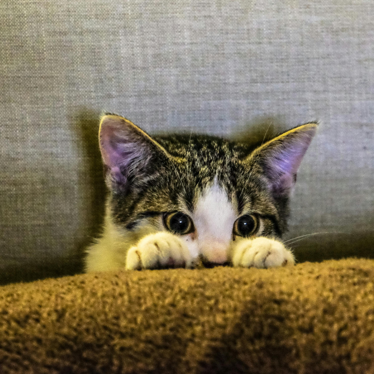

Have you ever wondered where your cat has disappeared to, only to find them in a small, obscure space like a cardboard box, a closet, or even a pot? Cats love to squeeze into various strange little places because hiding is in their nature. Even if your cat is lively and outgoing, they still need a safe place to hide.
The reasons cats like to hide are multifaceted. Firstly, hiding behavior in cats is partly due to their timidity and lack of security. When cats feel scared, anxious, or threatened, they instinctively seek out a safe place to hide. This behavior helps them avoid direct confrontation with potential threats, thus protecting themselves.
Secondly, hiding is also part of a cat’s hunting instinct. In the wild, feline animals need to hide to ambush their prey, and being in a concealed spot allows them to observe and approach their prey without being detected. Even domesticated cats still have this hunting instinct and will seek out narrow, dark places to mimic the hunting process.
Additionally, hiding provides a space for cats to relax and rest. Small, enclosed areas make cats feel warm and secure, helping them relax and quickly enter deep sleep. Here are some reasons why cats like to hide:
When cats feel threatened, insecure, scared, anxious, or stressed, they instinctively seek a safe place to hide. Narrow, dark spaces are highly secure hiding spots for them.
Sometimes, cats just want a quiet place to relax or sleep, ensuring they won’t be disturbed. If there isn’t a suitable hiding spot at home, cats will find one themselves, such as under the bed, sofa, or other dark crevices.
Studies show that hiding can significantly lower a cat’s stress levels, helping them adapt to new environments more quickly and making them more willing to interact with humans.
Cats are naturally not good at resolving conflicts and usually choose to avoid them. Hence, a hiding spot becomes their safe zone to avoid conflict and anxiety.
Cats love boxes and other small spaces because these places can retain warmth. According to the National Research Council, a cat’s thermoneutral zone is between 30 and 36 degrees Celsius, and small spaces help them maintain their body temperature.
Here are selected products from Amazon to assist in your decision-making. Links may contain affiliate marketing programs, where clicking and purchasing may generate a small commission for us (at no additional cost to you), helping maintain our website operations.
When cats are looking for suitable hiding spots at home, owners can provide some specially designed products for cats. This not only meets the cat’s needs but also protects other items in the home.
A product like the ComSaf Cat Scratcher Cardboard Bed Lounge Couch for Indoor Cats Oval Shape provides a small space that cats love while also serving as a scratching board. Made of recyclable corrugated cardboard, it’s environmentally friendly and satisfies cats’ scratching needs, reducing the chances of them damaging furniture.
The Amazon Basics Cat Tower with Hammock and Scratching Posts provides an indoor cat with a multifunctional activity center, including two sturdy scratching posts, a comfortable hammock, and a replaceable hanging soft ball toy. This cat tower gives cats a small world of their own at home, meeting their climbing and playing needs.
The Ramen Noodle Dog & Cat Bed is a cozy, soft, and warm creative pet bed suitable for small to medium-sized cats and dogs. This pet bed features a removable and washable cushion, with a non-slip design at the bottom, providing lasting comfort for pets. It’s especially suitable for cats who like to curl up to sleep.
These products not only meet the cats’ hiding needs but also improve their quality of life and happiness. When your cat is resting in these specially designed hiding spots, avoid disturbing them to ensure they feel safe and secure.
Whether your cat is shy and introverted or outgoing and bold, they all need several safe hiding spots. This not only helps reduce their stress but also improves their happiness and health. Finding suitable hiding places for your cat, where they feel safe and content, is very important. By providing appropriate products and environments, we can help our cats live happier and healthier lives.
Want to gain a deeper understanding of cat behavior and how to care for them? Click the link below to read more related articles. read more related articles
Looking for products for your cat or dog? Check out the articles linked below for more information and recommendations. Explore more articles